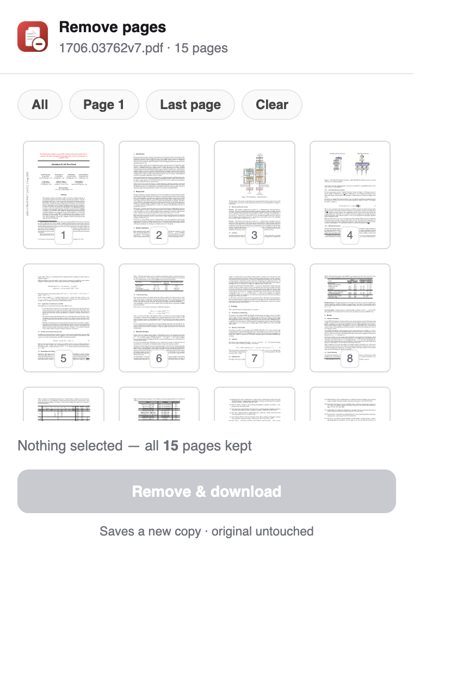

Chrome extension · Chrome, Edge & Brave
Remove pages from any PDF.
Keep the clean copy.
Open a PDF, click the icon, pick the pages you don't want in a thumbnail grid, and download the rest. Plus a one-click Remove cover button on JSTOR articles. Everything runs in your browser — nothing is uploaded.
Free · 100% local · no upload, no account, no tracking

Pick the pages to drop — real page thumbnails, right in the popup.
Small tool, does one thing well.
Manual page removal for any PDF, with site presets that encode the annoying bits — like JSTOR's cover page — so common jobs are one click.
Thumbnail grid
Every page rendered as a live thumbnail. Click the ones you don't want — a red ✕ marks them — and download the rest.
One-click JSTOR cover
On a JSTOR article page, a Remove cover button appears next to Download and strips the cover/info page, saving the article in one click.
Flagship preset100% local
Pages are removed right in your browser with pdf-lib and pdf.js. Your PDF, its filename, and its contents never leave your machine.
Keeps your original
Always saves a new, clean copy to your Downloads folder. The original file or tab is never modified.
Quick-select
All, Page 1, Last page, Clear — and a smart banner that offers to drop a cover page when it detects one (it never removes anything silently).
Any PDF
Web PDFs or local files. If thumbnails can't render for an unusual PDF, it falls back to numbered pages so it always works.
Install it in a minute.
The Chrome Web Store listing is in review. Until it's live, install the same extension manually — it's quick:
- Download the .zip above and unzip it — you'll get a
pdf-page-removerfolder. - Open
chrome://extensionsand turn on Developer mode (top-right toggle). - Click Load unpacked and select the
pdf-page-removerfolder. - Pin the icon, open any PDF, and click it. Done.
jstor.org the
first time you enable it — the base install requests nothing beyond the active tab. And to use
it on a local file:// PDF, turn on “Allow access to file URLs” in the
extension's Details page. Works the same in Edge (edge://extensions) and
Brave (brave://extensions).
Private by design.
There's no server. The only network request is fetching the PDF you're already looking at.
Nothing uploaded
All processing happens in-browser. No PDF, filename, or metadata is ever sent anywhere.
No tracking
No analytics, no accounts, no telemetry. The extension makes no requests of its own.
Minimal permissions
Just activeTab + downloads. JSTOR access is opt-in and requested only when you enable it.
Get PDF Page Remover.
Free, local, and non-destructive. Grab the .zip now, or wait for the one-click Store install.
Not affiliated with JSTOR or ITHAKA. “JSTOR” is used only to name the site the preset works on.